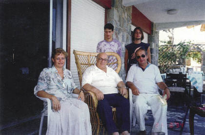
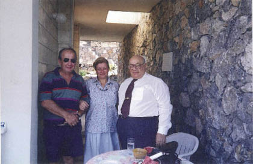

Ancak karşılıklı çıkarların korunması, özgürlük ve uluslararası haklar gibi konularda Kıbrıs Türklerini ezmeye yönelik baskı ve emperyalist girişimlere karşı Fidel Castro ve Hugo Chavez’le özdeşleşen bir tutum sergiledi.
Uzun yıllar önce Cumhuriyet’teki Bıçak Sırtı isimli köşemdeki bir yazımın başlığı “Fidel’in Tangosu, Denktaş’ın Valsi” idi.
– Atatürk ilkelerini ve Cumhuriyet’in kuruluş felsefesini özümsemiş bir kişiliğe sahiptir. Özde Atatürkçü bir siyasetçi olduğunu hep göstermiştir.
Gözünü açtığından beri politika denizinde boğulmadan yüzmüş bir siyasetçi olarak Denktaş, Cumhuriyet ve bölge tarihinin özgün kişiliklerinden birisidir.
Dünyanın en kritik bölgesi olan Ortadoğu ve Doğu Akdeniz’de Kıbrıs Türklerinin ve Türkiye’nin haklarını korumak konusunda son 55-60 yıl içinde büyük başarılar sağladı.
Benim bu kitapçıkta kaleme aldığım anılar daha çok Denktaş’ın politika dışındaki kişiliğini yansıtan anekdotlardır. Bunu özellikle yapmak istedim, çünkü onun politik kimliği hem kendi yazdığı pek çok eserde, hem de üçüncü şahısların kitaplarında enine boyuna ortaya konmuştur.
Ben de Dünden Bugüne Kıbrıs ve Avrupa Kıskacında Kıbrıs kitaplarımda ve pek çok makalemde Denktaş’ın politikalarına yer verdim. Ayrıca, Cyprus adlı İngilizce bir kitabım var.
On ciltlik Girne konferansları yayınlarında (1984-1994) Denktaş’ın açılış konuşmaları da yer alır. Bu kitaplar okunduğunda onun politikaları ve dünya görüşü çok net olarak görülebilir.
Ben bu çalışmamda daha çok onun bilinmeyen ya da az bilinen politika dışı kimliğini okurlarıma sunmaya çalıştım.

Denktaş bizi ziyarete gelmiş
İçinde acı, tatlı, alaycı pek çok şey var, ama hepsinde de örtülü bir siyasi bakış ve kara mizah gizli gizli kendini gösterir.
Rauf Denktaş bu özelliğe sahip dünyanın nadir politikacı ve devlet adamlarından birisidir.
Kaleme aldığım anıların önemli bir bölümü, 1999 yılına kadar olan dönemde ele alındı. 2000 yılında kendisiyle ilgili anılarımı yazmakta olduğumu söylemiştim.
Yazdığımı biliyor, ama içeriğini bilmiyor. Ancak kitap çıktıktan sonra öğrenebilecek.